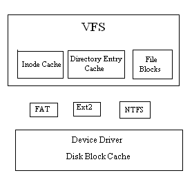
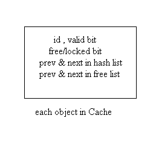
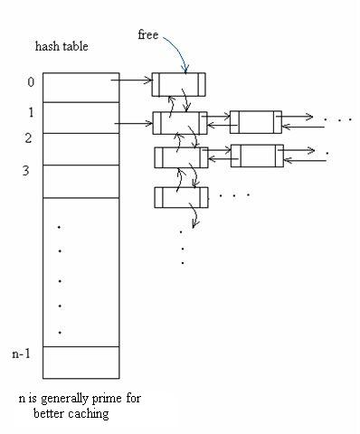

Lecture-37
Operating Systems (CS330)
Aim : Minimise the seek delay
If it is the first file block then allocate a block in the CG where inode
of the file is present else try to allocate a new block for a file in the
same CG as the previous block of the file.
We can easily analyse that soon we would be filling the same CG, we should
not overdo this as there might be other files growing in the same CG.
Hence we should decide on a upper limit on the size of file on a specific CG.
When 25% of the CG is occupied by a file then it needs to be redirected
to another CG.
Aim :Minimise the rotational delay
Having selected the CG, which block should we chose within the CG!
The policy says to handle requests for specific blocks, use them if they are
available, else check for a sequence of alternatives. The policy can be stated
in the following format.
In addition to the hardware caching, most operating systems use software disk caching. Since the system memory is many orders of magnitude faster than the hard disk, a small area of system memory is set aside to buffer requests to the hard disk. When reading data from the disk, the kernel intially attempts to read from the buffer cache. If the data is already in the cache, the kernel does not have to read from the disk or else it reads the data from the disk and caches it for further use.

The global inode table also serves as the Inode Cache. The inode cache contains copies
of inodes for open files and for some recently used files which are no longer open. The
number of inodes cached is controlled by some parameter(maximum no of Files to be Cached).
The Directory Entry Cache contains the copies of directory entries which are predicted to
be used frequently.
Device drivers do not know about the FS structure so the Cache present simply caches
disk blocks without knowing what it contains. The input would be device number and disk
block number and it would use some hashing scheme to return the block if present in cache,
else fetches it from memory and then according to cache eviction policy stores it in cache
for future use.

Valid bit checks the validity of the object in the cache. The free/locked bit informs whether
the cache location is free or locked. Free bit says that if no one is using the object
then it can be used.
We can easily see that if the valid bit is false then necessarily the free bit should
be true. Whereas if the valid bit is true, the free bit can be both true and false,
viz both valid and free bit are true when some valid data is used by none.
If both valid and locked are true then we have to wait, if free then make it locked &
remove it from free list and start using it.
When should a value be locked into the cache
Disk cache : for the duration of the system call.
Inode cache : for the time that the file is open.
The Disk Block Cache uses a indexed hash table using a doubly linked list to store blocks. Some hash function is used to hash the device number and the block number to the list. All buffers with data from blocks corresponding to a hash value are linked in a hash list corresponding to this hash value. A free list is also formed using all the free buffers.

Cache Misses are responsible for Cache evictions. To deal with Cache evictions we need some good policy to boost the performance, and LRU seems to do the trick. We can implement exact LRU by following these steps:
It is an algorithm that tries to save as much good data in the cache as possible.
When a cache miss occurs say for the ith block, we need to read it from disk.
Our algorithm suggests us to read the i+1th block after we have read ith
block in anticipation that it would be read soon.
The Disk I/O for i+1th block would be done in background which might be overlapping
with the execution of some program.
while(not eof(f)){
read(f,buffer,N)
process(buffer)
}
When the buffer is being processed, disk may be busy as data may be read. By the time processing is completed we may get the next data in Cache and if we are lucky the next data request would have been fetched via read ahead and we won't need to wait for the next data through a Disk I/O. Similarly when i+1th block is processed we might have read ahead i+2th block. We are sure to gain in terms of performance.
Our algorithm tries to minimize the frequency of disk write operations.
It tries to determine whether the data must be stored immediately on disk .We might
be wasting Disk I/O as
Since files and directories are kept in main memory and on disk, care must be taken to
ensure that system failure does not result in loss of data or data inconsistencies.
File System Inconsistencies mainly arise due to delayed writes, where we tend to gain
on speed by sacrificing on reliability.
File system can become inconsistent due to several reasons and the most common is abnormal
shutdown due to hardware failure, power failure or switching off the system without
proper shutdown. Due to these reasons the super block in a file system is not updated and
has mismatched information relating to system data blocks, free blocks and inodes.
Generally a special program fsck(file system check) a Unix utility is used for
checking and repairing file system inconsistencies .
There is lot of redundant data which helps the program to check for the inconsistencies, viz-